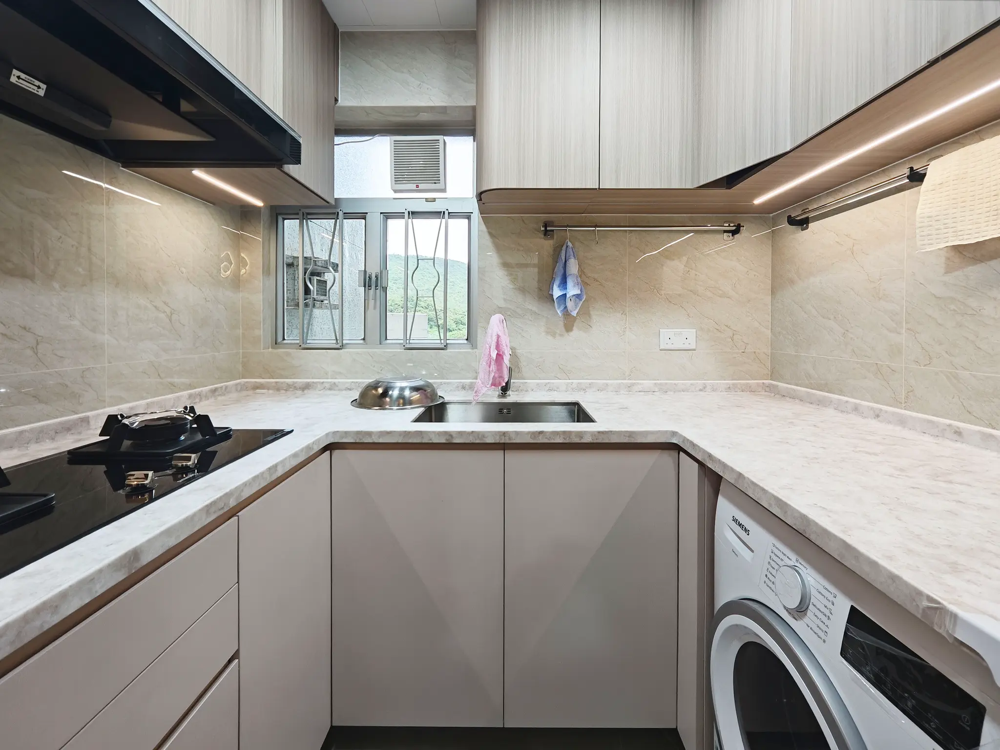
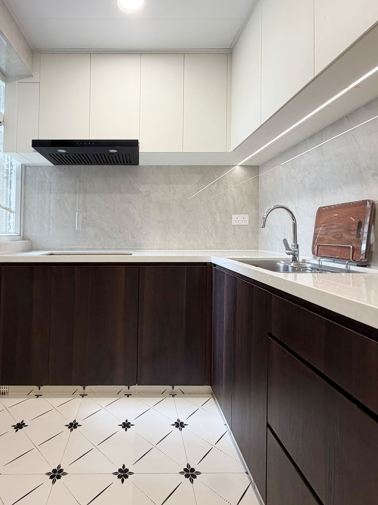

Open Kitchen Renovation in Hong Kong: What to Check Before Removing Walls or Doors

ECHOUSE original project photography — Robinson Place. A compact kitchen can open towards the living area while retaining a defined working zone.
An open kitchen can make a Hong Kong flat feel lighter, more sociable and easier to navigate. It can also change how cooking smells, noise, storage, fire safety, daylight and circulation are experienced throughout the home. The strongest open-kitchen projects do not begin by asking which partition should disappear. They begin by asking what the existing kitchen enclosure does, what the approved layout permits and how the household will use the combined room every day.
For many homeowners, an open kitchen is not about chasing a trend. It is a response to a compact living area, a desire for more connection while cooking or a wish to make a narrow flat feel less divided. Those are valid design goals. The route to them, however, should be grounded in careful checks rather than an assumption that every wall or door is decorative.
1. Start with what the existing kitchen enclosure is doing
Before selecting cabinetry or removing anything, identify the kitchen boundaries shown on the approved plans and compare them with the flat as it stands. A wall, opening or door may affect more than sightlines. It can relate to the building structure, fire-resisting construction, ventilation or the route people use to leave the flat.
The Buildings Department notes that walls enclosing a kitchen may be structural, while walls and doors may also be fire-resisting. Removing them can affect structural safety, fire safety and means of escape. The Department advises an owner considering an open kitchen to check the flat’s approved plans and seek advice from a building professional before the alteration.[1]
This does not mean an open kitchen is automatically impossible. It means the project has to be understood as a building and renovation decision before it becomes a styling decision. A good early conversation should cover the current kitchen location, the existing door and wall construction, the building’s design, the management office’s requirements and the intended changes to cooking equipment, extraction and layout.
If the proposal affects structural elements, fire-resisting construction or means of escape, building plans and formal approval may be required before work begins. The appropriate path depends on the actual scope, which is why a site-specific professional assessment matters.[1]

ECHOUSE original project photography — Robinson Place. Appliance positions, storage and worktop space should be resolved before a compact kitchen is opened to the rest of the home.
2. Define the lifestyle brief before drawing the island
Once the feasibility work is underway, write a simple lifestyle brief. Who cooks? How frequently? Is the kitchen used for quick weekday meals, detailed weekend cooking, entertaining or meal preparation for a family? Do you need a table for work and dining, or will a peninsula simply become a dumping surface for bags and deliveries?
In a compact flat, an island is not automatically the answer. It can consume the clear route between entrance, living room and fridge, especially when cabinet doors and appliances are open. A galley layout, a single-wall kitchen with a dining table, or a shallow peninsula can be more useful if it gives each activity enough room.
Map the everyday sequence: arriving with groceries, putting food away, preparing, cooking, washing up and taking waste out. Make sure the fridge door, drawers, dishwasher or washing machine can open without blocking the only route through the room. These ordinary moments are where an open kitchen either feels effortless or continually frustrating.
The living area should also be part of the brief. Consider the sightline from sofa to hob, where small appliances will live, whether you want to see dishes from the entrance and how much contained storage is needed to keep the room calm. Openness does not require everything to remain visible.

ECHOUSE original project photography — Fu Hong Garden. A clear relationship between hob, sink, worktop and storage helps a compact kitchen work efficiently.
3. Let the approved layout lead the technical decisions
An open-plan rendering can hide the most important constraints. Existing drainage, gas or electrical arrangements, duct routes, columns and pipe boxing influence what is sensible to move. Before requesting a quote, establish which elements are fixed, which are flexible and which need technical advice.
The Buildings Department explains that where an owner wishes to convert a kitchen to an open kitchen, the location and size of the kitchen should be checked against the approved plans. If the enclosing walls or door are fire-resisting, they generally should not be removed; if they are not fire-resisting, removal may be possible provided the kitchen’s location and size do not change. Changes to location or size should be assessed with professional advice.[1]
Treat that guidance as a reason to make the design brief precise. Rather than asking for “open kitchen renovation”, define the existing layout, the wall or door you are considering, the intended cooking setup, the storage needs and the desired degree of visual connection to the living area. Your consultant and contractor can then respond to a real scope rather than a loose aesthetic ambition.
It is also sensible to check your deed of mutual covenant and management rules. The Buildings Department notes that these documents can include restrictions or consent requirements for particular works.[1] Protecting common areas, scheduling deliveries, managing debris and arranging utility shut-offs are all easier when they are planned before a construction date is announced.
4. Design for heat, odours and cleaning as well as light
Open kitchens change the relationship between cooking and the rest of the home. Choose materials and details that suit that reality. A beautiful timber veneer, open shelving or a heavily textured surface may be appropriate in the right location, but it should be balanced with areas that are easy to wipe down near active cooking and washing zones.
Think about where steam and odours will travel, how frequently you cook with high heat and where extraction needs to be considered within the approved design. This is not simply a choice of a powerful-looking appliance. It should be coordinated with the kitchen layout, existing services and the wider renovation scope.
Make the lighting layered. Task light is useful where food is prepared. Ambient light helps the kitchen sit comfortably alongside the living area. A decorative pendant can create a focal point over a dining surface, but it should not be the only light you have for chopping, cooking or cleaning. Use a warm, consistent lighting approach so that the kitchen feels integrated rather than like a separate showroom inserted into the room.
Storage is equally important. With fewer enclosing walls, a kitchen often needs more disciplined closed storage. Reserve accessible zones for daily cookware, while keeping bulky appliances, recycling and cleaning products in locations that do not disrupt the room. A well-planned tall cabinet can be more valuable than several open shelves when the home needs to stay visually calm.

ECHOUSE original project photography — Laguna City Phase One. Cabinetry, task lighting and easy-clean surfaces should be planned together with the kitchen’s daily use.
5. Make the quote reflect the actual scope
An open-kitchen quote should do more than list cabinets and worktop metres. It needs to identify the existing condition, any required investigations, wall or door treatment, changes to services, appliance allowances, finishes, protection of adjacent living areas and the sequence for dealing with discoveries after demolition.
Ask for drawings or written descriptions that make the project easy to compare. The finished kitchen may be the visible result, but the quotation should also address the interfaces: ceiling repairs, flooring transitions, backsplash returns, lighting points, electrical accessories, appliance responsibility, delivery access and final testing or handover.
If a design decision depends on approval or an on-site opening-up inspection, state that clearly. A transparent provisional item is healthier than a fixed-looking number that hides an untested assumption. It helps everyone understand what has been priced, what has not, and how variations will be documented if the site reveals something unexpected.
Frequently asked questions
Can I remove the door to make my kitchen open-plan?
Do not assume the door is only decorative. Kitchen doors and enclosing walls may affect fire safety, structure or means of escape. Check the approved plans and seek professional advice before deciding on removal.[1]
Is an island suitable for every Hong Kong flat?
No. An island should earn the space it uses. If it reduces the working route or prevents appliance doors from opening comfortably, a galley plan or shallow peninsula may perform better.
What should I decide before asking for quotations?
Confirm your existing layout, the wall or door you want to change, cooking habits, key appliances, storage needs, desired dining arrangement and the constraints that require professional review.
Will an open kitchen make the home harder to keep tidy?
It can, unless storage and cleaning surfaces are planned carefully. Closed storage, realistic landing space and materials chosen for the cooking routine make a significant difference.
Make openness work for the whole home
The goal of an open kitchen is not simply to remove a boundary. It is to create a more useful relationship between cooking, dining and living—without ignoring the building conditions that make the layout safe and workable. Begin with the existing plans, seek the right advice early and let real household routines guide every visible decision.
Considering an open kitchen in a Hong Kong flat? ECHOUSE DESIGN can help you turn your lifestyle brief into a practical renovation direction, with early attention to layout, materials and the checks that should be made before work starts. Book a Free Consultation.
Plan with a clearer brief.
Speak with ECHOUSE DESIGN about a practical renovation direction for your Hong Kong home.
BOOK A FREE CONSULTATIONReferences
[1] Buildings Department — Alteration and Addition Works in Domestic Premises